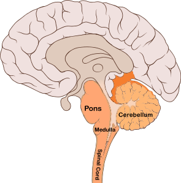
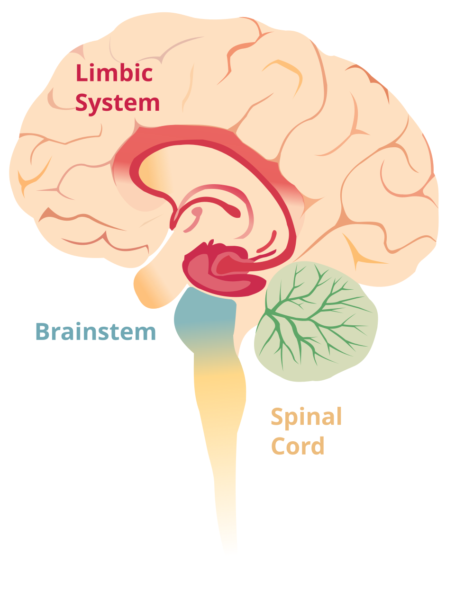
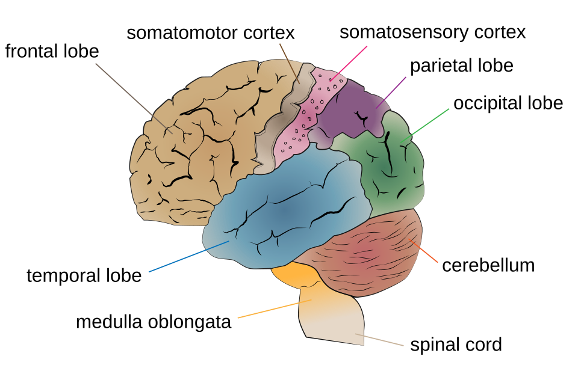

The Big Picture: Mapping the Mind
The human brain is arguably the most complex structure in the known universe. Weighing in at only about three pounds, it contains roughly 86 billion neurons, forming trillions of connections that dictate everything from your baseline heart rate to your most abstract philosophical thoughts. For the AP Psychology exam, you do not need to be a neurosurgeon, but you do need to act like a cartographer. You must be able to accurately map specific behaviors, deficits, and functions to their precise anatomical locations.
To make this manageable, we organize the brain into an evolutionary timeline from bottom to top. As you move up from the spinal cord to the outermost wrinkles of the cortex, the structures become increasingly complex. We divide this hierarchy into three primary regions:
- The Old BrainBrainstem & Cerebellum
- Handles basic, unconscious survival functions.
- The Emotional CenterLimbic System
- Handles memory, intense emotions, and drives.
- The New BrainCerebral Cortex
- Handles complex thought, language, and voluntary movement.
1.The Old Brain (The Brainstem and Cerebellum)
Located at the very base of the skull where the spinal cord swells as it enters the brain, the brainstem is the oldest and most fundamental part of the central nervous system. It is responsible for automatic survival functions. If this area is severely damaged, life support is almost always required.
- Medulla
- Located at the absolute base of the brainstem, this structure controls life-sustaining autonomic functions such as heartbeat, breathing, and blood pressure. (Mnemonic: You would die without your medulla).
- Pons
- Sitting just above the medulla, the pons helps coordinate automatic movements and plays a critical role in regulating sleep and arousal by connecting the brainstem to the cerebellum. (Mnemonic: Pons = Pillows for sleep).
- Cerebellum
- The "little brain" attached to the rear of the brainstem. It is essential for coordinating voluntary movement, maintaining balance and posture, and processing implicit (muscle) memories. If you are effortlessly riding a bike, your cerebellum is doing the heavy lifting.
- Reticular Activating System
- A network of neurons that travels through the brainstem, playing an essential role in regulating alertness, attention, and sleep-wake cycles by filtering incoming sensory information, deciding what's important enough to grab your focus or wake you up. (Famous finding: sever a cat's reticular activating system, and it lapses into a permanent coma.)
- Reward Center
- A group of brain structures, including areas of the limbic system, that are activated by pleasurable experiences and reinforce behaviors through dopamine release. Working alongside the reticular activating system, it plays a role in learning, motivation, and emotion, which is exactly why things that feel good are so easy to want to repeat.

2.The Emotional Center (The Limbic System)
Sitting like a donut between the older brainstem and the newer cerebral hemispheres is the Limbic System. This neural system is heavily associated with intense emotions (like fear and aggression) and foundational drives (like hunger and sex).
- Amygdala
- Two lima-bean-sized neural clusters that are heavily linked to raw emotions, particularly fear and aggression. (Mnemonic: Don't make Amy mad, or she'll use her Amygdala!).
- Hippocampus
- A seahorse-shaped structure critical for the processing and storage of explicit, conscious memories. If this is damaged, a person cannot form new factual memories, a condition known as anterograde amnesia. (Mnemonic: If a hippo camped on your campus, you would certainly remember it).
- Hypothalamus
- Situated just below the thalamus, it directs maintenance activities (eating, drinking, body temperature), helps govern the endocrine system via the pituitary gland, and is linked to emotion and the brain's reward centers. It regulates the four F's: Fighting, Fleeing, Feeding, and... Fornicating.
- Pituitary Gland
- Often called the body's "master gland," this small structure hangs just below the hypothalamus and takes its orders directly from it. In response, the pituitary releases hormones that control other endocrine glands throughout the body, regulating everything from growth to metabolism to reproduction. It's the one gland outside the nervous system that AP Psychology holds you responsible for knowing in detail.
- Thalamus
- The brain’s central sensory control center, located on top of the brainstem. It receives information from all the senses (except smell) and actively routes that data to the higher brain regions that deal with seeing, hearing, tasting, and touching. (Mnemonic: Hal and Amos act as traffic cops directing sensory information).

3.The New Brain (The Cerebral Cortex)
The Cerebral Cortex is the intricate fabric of interconnected neural cells covering the cerebral hemispheres. This wrinkled outer layer is the body's ultimate control and information-processing center. It is divided into two hemispheres (left and right), which are connected by a thick band of neural fibers called the Corpus Callosum. Each hemisphere is subdivided into four specialized lobes:
The Four Lobes
- Frontal Lobes
- Located directly behind your forehead. These lobes handle linguistic processing, Higher-Order Thinking (complex reasoning like analysis, evaluation, and creative problem-solving), and Executive Functioning: the cognitive processes, including working memory, flexible thinking, and self-control, that let you plan ahead and resist impulses. Most of this heavy lifting happens in the Prefrontal Cortex, the forward-most part of the frontal lobes responsible for judgment, planning, and processing new memories. The frontal lobes also contain the Motor Cortex at their rear, which controls most voluntary skeletal movement. Fittingly, the frontal lobes, especially the prefrontal cortex, are the last part of the brain to fully develop, finishing in your mid-20s.
- Parietal Lobes
- Located at the top of the head toward the rear. They receive sensory input for touch, pressure, temperature, and body position through the Somatosensory Cortex, which registers and processes body touch and movement sensations. The rest of the parietal lobes are made up of Association Areas: regions of the cortex not dedicated to primary motor or sensory functions, but instead responsible for higher mental functions like integrating and organizing that sensory information into a coherent picture of your surroundings.
- Occipital Lobes
- Located at the back of the head. These lobes include areas that receive and process visual information from your eyes. (Mnemonic: You have eyes in the back of your head).
- Temporal Lobes
- Located roughly above the ears. They include the auditory areas, each receiving information primarily from the opposite ear. They also play a role in recognizing faces. (Mnemonic: They are right next to your temples).
Language Processing Areas
While most functions are distributed across both hemispheres, language is typically lateralized to the Left Hemisphere. Two specific regions are heavily tested:
- Broca's Area
- Located in the left frontal lobe, it directs the muscle movements involved in speech production. (Damage here causes Broca's (expressive) aphasia: you know what you want to say, but physically cannot produce the words).
- Wernicke's Area
- Located in the left temporal lobe, it is involved in language comprehension and expression. (Damage here causes Wernicke's (receptive) aphasia: you can speak fluently, but the words make absolutely no logical sense, acting like a "word salad").

Split-Brain Research: Studying a Divided Mind
How do we actually know that language is lateralized to the left hemisphere? Much of that evidence comes from Split Brain Research: studies of individuals whose corpus callosum has been surgically severed, often as a last-resort treatment to stop severe, uncontrollable epilepsy. Without the corpus callosum acting as a bridge, the left and right hemispheres are cut off from each other and forced to function almost like two separate minds sharing one skull.
Researchers test for this hemispheric specialization by taking advantage of the brain's Contralateral Organization: the wiring quirk where the left hemisphere controls (and receives sensory information from) the right side of the body, and the right hemisphere handles the left. By briefly flashing an image into just one visual field at a time, researchers can send information to only one hemisphere and watch how a split-brain patient responds. Flash a picture to the right visual field (left hemisphere, home of language) and the patient can name it out loud without trouble. Flash the exact same picture to the left visual field instead, and the patient often can't say what they saw, even though the right hemisphere clearly recognized it, since that same patient's left hand (controlled by the right hemisphere) can still pick the matching object out by touch.
4.The Adaptable Brain (Neuroplasticity)
Your brain is not a rigidly hardwired machine; it is a highly dynamic and malleable organ. Neuroplasticity refers to the brain's ability to change, reorganize, and build new neural pathways throughout life, especially in response to learning, experience, or following injury.
If a person goes blind, the occipital lobe doesn't just sit idle. Because of neuroplasticity, those visual processing areas may be recruited to enhance the person's sense of touch (for reading Braille) or hearing. While plasticity is present throughout a lifetime, the brain is vastly more plastic during childhood. This is why children can recover from severe traumatic brain injuries or massive surgeries (like a hemispherectomy, where an entire half of the brain is removed to stop seizures) far better than adults.
5.How Do We Know? (Studying the Brain)
Everything covered on this page, which lobe does what, where language lives, how memories form, had to be discovered somehow. Psychologists can't just open up a skull and watch thoughts happen, so the field relies on a toolkit of brain scans, case studies, and controlled damage to map structure onto function.
- EEG
- Short for electroencephalogram, an amplified recording of the waves of electrical activity sweeping across the brain's surface. EEGs capture activity millisecond by millisecond, which makes them especially useful for studying sleep stages or catching abnormal activity like a seizure as it happens.
- fMRI
- A brain imaging technique that measures changes in blood flow to show which areas of the brain are active during a specific mental task. Since active neurons demand more oxygenated blood, an fMRI essentially builds a live "heat map" of the brain in action, useful for pinpointing which structures light up when someone recognizes a face or feels afraid.
- Case Studies
- In-depth investigations of a single individual, often someone with a rare or unusual brain injury. Some of psychology's most famous discoveries about brain function came from carefully documenting what one person could and couldn't do after a specific injury.
- Lesioning
- Studying the effects of damage to a specific brain structure, whether from natural injury or (in animal research) deliberately induced Lesions. By comparing what a person or animal can and can't do after a particular area is damaged, researchers can work backward to figure out what that region was responsible for in the first place. Split-brain research, discussed above, is really just a large-scale, deliberate version of this same lesioning logic.
6.Don't Trip Up! (Common Misconceptions)
⚠️ Motor vs. Sensory Cortex: Students often mix these two up. Remember the order from front to back: The Motor Cortex is in the Frontal lobe (it sends signals out to move), while the Somatosensory Cortex is right behind it in the Parietal lobe (it receives sensory signals in).
⚠️ Broca's vs. Wernicke's: Broca’s area is for Broadcasting (speaking). Wernicke’s area is for What? (comprehending).
⚠️ The 10% Myth: You do NOT only use 10% of your brain. Every part of the brain has a known function, and brain scans show activity cascading across the entire brain even during simple tasks or sleep. You use 100% of your brain.
7.Key Terms in This Topic
8.Practice This Topic
Test yourself on exactly what you just read, then mix it up with games and puzzles. The numbers on each button show how much material is waiting for you.
The same self-check questions that close your guided notes. Find out whether the brain structures stuck.
Start Quick Check →Flip through the key terms from this topic, including the lobes of the cortex and the parts of the limbic system.
Open the deck →AP-style multiple choice on brain structures, what they do, and how we study them, with an explanation after every answer.
Take the quiz →You're getting close to the end of Unit 1. Mix it up with games that review the whole unit.